INFORME DE AUDITORÍA DE SEGURIDAD OFENSIVA (PR02)
Evaluación de Seguridad y Resiliencia en Infraestructura Crítica Simulada
1. Alcance y Metodología
1.1 Objetivo General
Evaluar integralmente la postura de ciberseguridad, resiliencia y controles de protección del organismo operador ficticio de servicios de agua y saneamiento INTERAFAS, identificando vulnerabilidades técnicas en sus aplicaciones web, interfaces de programación, fronteras de acceso y módulos simulados de supervisión.
1.2 Alcance del Entorno
La auditoría se limitó al entorno de laboratorio controlado y aislado provisto en contenedores Docker:
- Portal Institucional y Ciudadano (INTERAFAS):
http://localhost:8080(Contenedorinterafas-web) - Portal Informativo Metropolitano (Pulso Metropolitano):
http://localhost:8091(Contenedorinterafas-news) - Portal del Auditor y Bitácora Forense:
http://localhost:8092(Contenedorinterafas-auditor) - Base de Datos Centralizada:
interafas-db:3306 - Simulador de Control y Telemetría Operacional (OT):
interafas-ot-sim:8081
1.3 Metodología
Se aplicaron estándares internacionales reconocidos para pruebas de penetración y auditorías de seguridad web:
- OWASP Web Security Testing Guide (WSTG v4.2): Information Gathering (WSTG-INFO), Configuration and Deployment Management (WSTG-CONF), Identity & Authentication Management (WSTG-ATHN), Authorization Testing (WSTG-ATHZ), Session Management Testing (WSTG-SESS), Input Validation Testing (WSTG-INPV), Error Handling (WSTG-ERRH) y Business Logic Testing (WSTG-BUSL).
- OWASP API Security Top 10 (2023): API1: Broken Object Level Authorization (BOLA), API8: Security Misconfiguration y API9: Improper Inventory Management.
- NIST SP 800-82 Rev. 3 (Guide to Operational Technology Security) & CISA Playbooks: Para el análisis de segmentación IT/OT, control de privilegios en ingeniería y validación de integridad de configuraciones.
2. Resumen Ejecutivo
Durante la evaluación de las 20 vulnerabilidades del entorno INTERAFAS-LAB, se identificó una postura de seguridad crítica caracterizada por cinco debilidades sistémicas:
- Deuda técnica acumulada: Presencia de artefactos de desarrollo, código fuente de respaldo sin proteger y notas internas de despliegue accesibles públicamente en el servidor web.
- Fallas estructurales en el control de acceso: Ausencia de validación de propiedad en consultas de expedientes ciudadanos (IDOR) y falta de controles de autorización por objeto en la API REST de servicios históricos (BOLA).
- Mala gestión de sesiones y lógica de negocio: La aplicación web tolera fijación de sesiones anónimas a sesiones autenticadas sin rotación de identificadores, y la pasarela de pagos confía en montos manipulables del lado del cliente.
- Debilitamiento de la frontera de confianza IT/OT: Las APIs públicas divulgan la segmentación privada del Centro de Operaciones (
10.40.20.0/24), y el gateway de enlace confía en cabeceras HTTP manipulables (X-Forwarded-For), permitiendo cruzar la frontera web hacia la zona operacional. - Desprotección de telemetría, paquetes de actualización y parámetros operacionales en OT: El servicio de telemetría expone el estado de la planta sin sesión autenticada; el canal de actualización acepta paquetes validando únicamente sumas SHA-256 sin firma criptográfica; el rol
maintenancecarece de aislamiento respecto a la cadena de dependencias del proceso; y el módulo de configuración carece de validación de límites de seguridad (safety bounds) sobre el parámetropressure_setpoint_bar.
3. Vulnerabilidades
| ID | Código Interno | Nombre del Hallazgo | Componente Afectado | Categoría OWASP / NIST | Severidad | Bandera Registrada |
|---|---|---|---|---|---|---|
| 01 | OPEN-DOOR |
Archivo público olvidado / Listado de directorios | /assets/docs/public/revision/ |
Exposición de Información | Baja | UPSLP_CNOIV-OPEN-DOOR-01 |
| 02 | LOOK-CLOSER |
Información sensible en recursos del cliente | /assets/meta/build-manifest.php |
Reconocimiento / Fuga de datos | Baja | UPSLP_CNOIV-LOOK-CLOSER-02 |
| 03 | NOT-YOURS |
Referencia directa insegura a objetos (IDOR) | /expediente.php?id= |
Control de Acceso Roto | Media | UPSLP_CNOIV-NOT-YOURS-03 |
| 04 | OLD-MEMORIES |
Respaldo o archivo histórico expuesto | /transparencia.php.bak |
Fuga de Código Fuente | Media | UPSLP_CNOIV-OLD-MEMORIES-04 |
| 05 | TOO-MUCH-INFO |
Divulgación de información técnica mediante errores | /exportar.php?tipo= |
Manejo Inadecuado de Errores | Media | UPSLP_CNOIV-TOO-MUCH-INFO-05 |
| 06 | WRONG-ROLE |
Control de acceso por rol deficiente | /gestion-proveedores.php |
Falla de Autorización | Media | UPSLP_CNOIV-WRONG-ROLE-06 |
| 07 | SILENT-ANSWER |
SQL Injection ciega basada en inferencia | /validar-referencia.php?ref= |
Inyección (SQLi Booleana) | Alta | UPSLP_CNOIV-SILENT-ANSWER-07 |
| 08 | STORED-WORDS |
Entrada persistente procesada de forma insegura | /reportes.php → /seguimiento-reporte.php |
Stored XSS | Media | UPSLP_CNOIV-STORED-WORDS-08 |
| 09 | TOO-DEEP |
Acceso a rutas fuera del directorio autorizado | /descargar-documento.php?file= |
Path Traversal | Alta | UPSLP_CNOIV-TOO-DEEP-09 |
| 10 | WHO-ARE-YOU |
Fijación y reutilización indebida de sesión | /login.php / /perfil.php |
Gestión Débil de Sesión | Media | UPSLP_CNOIV-WHO-ARE-YOU-10 |
| 11 | HIDDEN-HISTORY |
Descubrimiento de endpoint API no documentado | /api/account-context.php → /api/service-history.php |
API9: Shadow Endpoint | Media | UPSLP_CNOIV-HIDDEN-HISTORY-11 |
| 12 | SECOND-ACCOUNT |
Autorización de objetos deficiente en API (BOLA) | /api/service-history.php?account= |
API1: BOLA / IDOR | Alta | UPSLP_CNOIV-SECOND-ACCOUNT-12 |
| 13 | PAYMENT-PATH |
Abuso de lógica de negocio en flujo de pago | /pago.php |
Falla de Lógica de Negocio | Alta | UPSLP_CNOIV-PAYMENT-PATH-13 |
| 14 | TRUSTED-SUPPLIER |
Control deficiente de relaciones proveedor-contrato | /validar-vinculo-contractual.php |
Falla de Lógica / ReBAC | Media | UPSLP_CNOIV-TRUSTED-SUPPLIER-14 |
| 15 | BEHIND-THE-DESK |
Exposición de arquitectura y segmentación interna | /api/infrastructure-status.php |
Fuga de Arquitectura de Red | Alta | UPSLP_CNOIV-BEHIND-THE-DESK-15 |
| 16 | BEYOND-THE-WEB |
Bypass de frontera operacional por cabecera de proxy | /operations/gateway.php |
Evasión de Frontera (IT→OT) | Crítica | UPSLP_CNOIV-BEYOND-THE-WEB-16 |
| 17 | EYES-ON-THE-PLANT |
Telemetría operacional expuesta sin sesión autenticada | /operations/telemetry.php |
Falta de Autenticación en OT | Alta | UPSLP_CNOIV-EYES-ON-THE-PLANT-17 |
| 18 | TRUST-THE-PACKAGE |
Validación defectuosa de paquete de firmware (solo hash) | /operations/updates/install.php |
Fallas de Integridad de Software | Crítica | UPSLP_CNOIV-TRUST-THE-PACKAGE-18 |
| 19 | CHAIN-REACTION |
Exceso de privilegios en contexto de dependencias OT | /operations/asset-context.php |
Violación de Mínimo Privilegio | Crítica | UPSLP_CNOIV-CHAIN-REACTION-19 |
| 20 | NOW-YOU-CONTROL |
Ausencia de límites seguros en parámetros de proceso | /operations/firmware.php |
Validación de Parámetros OT | Crítica | UPSLP_CNOIV-NOW-YOU-CONTROL-20 |
4. Detalles Técnicos por Hallazgo
Reto 01: Archivo público olvidado (OPEN-DOOR)
Severidad: Baja
- Causa Raíz: El archivo
robots.txtexpuso la ruta/assets/docs/public/revision/. El servidor Apache tiene habilitado el módulomod_autoindex(Options +Indexes) sin archivoindex.html, permitiendo listar el contenido donde se olvidó el paquete de despliegueportal-release_20260407_rc3.zip. - Evidencia Técnica: Línea en
deploy/release-check.env:SMOKE_TEST_TOKEN=UPSLP_CNOIV-OPEN-DOOR-01. - Impacto y Riesgo: Confidencialidad media. Expone metadatos de compilación, scripts de sincronización (
rsync) y rutas de la aplicación. - Mitigación Específica: Deshabilitar
Options -Indexesen la configuración de Apache y automatizar la eliminación de archivos de empaquetado post-despliegue mediante pipelines de CI/CD.
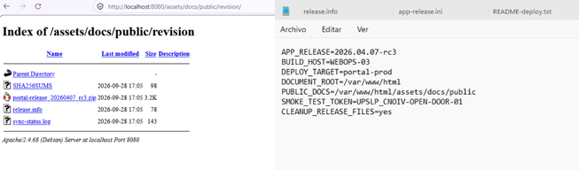
Figuras PR02-1.1 y PR02-1.2: Navegación de producto y localización de la bandera.
Reto 02: Información sensible en recursos del cliente (LOOK-CLOSER)
Severidad: Baja
- Causa Raíz: Enlaces a metadatos de compilación y runtime (
/assets/meta/build-manifest.php) expuestos en recursos accesibles desde el frontend sin restricción de acceso. - Evidencia Técnica: Token en JSON:
release_validation_token: UPSLP_CNOIV-LOOK-CLOSER-02. - Impacto y Riesgo: Fuga de información que permite mapear componentes y librerías internas.
- Mitigación Específica: Restringir el acceso a la carpeta
/assets/meta/mediante reglas de servidor web (Require all denied).
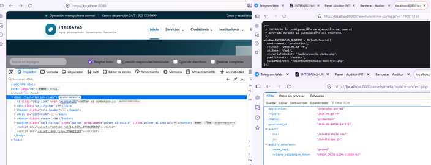
Figuras PR02-2.1 y PR02-2.2: Navegación de producto y localización de la bandera.
Reto 03: Referencia Directa Insegura a Objetos - IDOR (NOT-YOURS)
Severidad: Media
- Causa Raíz: El script
/expediente.phprecibe el parámetroidmediante GET. La consulta SQLSELECT * FROM expedientes WHERE id=?no valida que elusuario_iddel registro coincida con la sesión activa ($_SESSION['user']['id']). - Evidencia Técnica: Campo visible en la sección Expediente administrativo:
Referencia de validación: UPSLP_CNOIV-NOT-YOURS-03. - Impacto y Riesgo: Violación severa de Confidencialidad (PII) bajo regulaciones de protección de datos personales (LFPDPPP).
- Mitigación Específica: Incluir verificación de pertenencia en la consulta:
SELECT * FROM expedientes WHERE id=? AND usuario_id=?.
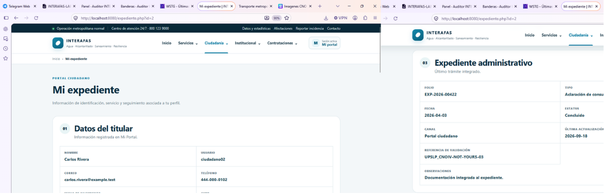
Figuras PR02-3.1 y PR02-3.2: Navegación de producto y localización de la bandera.
Reto 04: Respaldo de Código Fuente Expuesto (OLD-MEMORIES)
Severidad: Media
- Causa Raíz: Copia de respaldo previa (
transparencia.php.bak) conservada en el document root. Al tener extensión.bak, el servidor Apache no la delega al intérprete PHP y la entrega como texto plano. - Evidencia Técnica: Línea 28 de
transparencia.php.bak:$releaseValidation = 'UPSLP_CNOIV-OLD-MEMORIES-04';. - Impacto y Riesgo: Confidencialidad alta. Expone la lógica de programación del backend y nombres de funciones internas.
- Mitigación Específica: Configurar directivas en Apache para prohibir la descarga de respaldos (
<FilesMatch "\.(bak|old|tmp|save)$"> Require all denied </FilesMatch>).
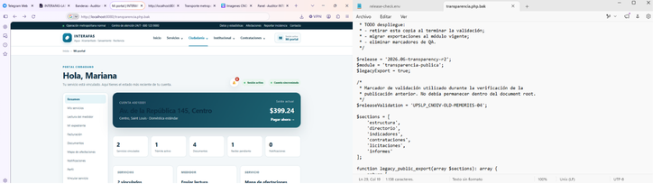
Figuras PR02-4.1 y PR02-4.2: Navegación de producto y localización de la bandera.
Reto 05: Manejo Inadecuado de Errores - Verbose Debug (TOO-MUCH-INFO)
Severidad: Media
- Causa Raíz: La expresión
match($tipo)en/exportar.phpno cuenta con cláusuladefault. Al recibir un valor no contemplado, lanza unUnhandledMatchErrorcapturado por un bloque que imprime información de depuración (DEBUG RESPONSE ENABLED). - Evidencia Técnica: Fila
Build validationen el reporte:UPSLP_CNOIV-TOO-MUCH-INFO-05. - Impacto y Riesgo: Divulgación de rutas absolutas (
/var/www/html/), versión de módulos y nombres del esquema de base de datos (db:3306 / interafas). - Mitigación Específica: Manejar cláusulas por defecto, configurar
display_errors = Offenphp.iniy renderizar páginas de error genéricas.
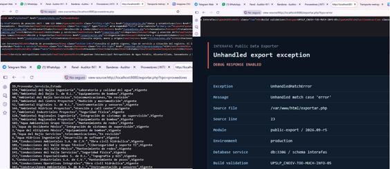
Figuras PR02-5.1 y PR02-5.2: Navegación de producto y localización de la bandera.
Reto 06: Control de Acceso por Rol Deficiente (WRONG-ROLE)
Severidad: Media
- Causa Raíz: El módulo
/gestion-proveedores.phpvalida el rol del usuario confiando en un valor almacenado del lado del cliente (cookieportal_role) en lugar de verificar los privilegios en la sesión del servidor. - Evidencia Técnica: Acreditación con el token
UPSLP_CNOIV-WRONG-ROLE-06. - Impacto y Riesgo: Escalación vertical de privilegios, permitiendo acceder a funciones administrativas de gestión de proveedores.
- Mitigación Específica: Nunca delegar el rol del usuario a una cookie manipulable en el cliente; validar estrictamente contra
$_SESSION['user']['rol']en el servidor.
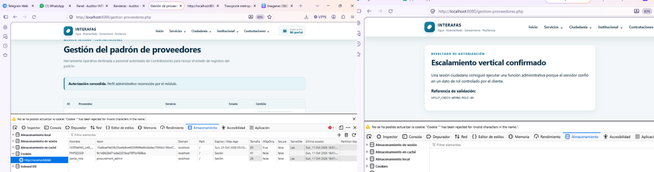
Figuras PR02-6.1 y PR02-6.2: Navegación de producto y localización de la bandera.
Reto 07: SQL Injection Ciega basada en Inferencia Booleana (SILENT-ANSWER)
Severidad: Alta
- Causa Raíz: En
/validar-referencia.php, el parámetrorefse concatena directamente en la sentencia SQL sin parametrizar, permitiendo alterar la lógica booleana de la consulta e inferir datos a partir del mensaje de respuesta. - Evidencia Técnica: Acreditación del evento en bitácora y bandera:
UPSLP_CNOIV-SILENT-ANSWER-07. - Impacto y Riesgo: Integridad y Confidencialidad críticas. Permite extracción por inferencia de registros de la base de datos.
- Mitigación Específica: Reemplazar la concatenación de cadenas por sentencias preparadas con PDO (
$pdo->prepare("SELECT id FROM licitaciones WHERE numero = ?")).
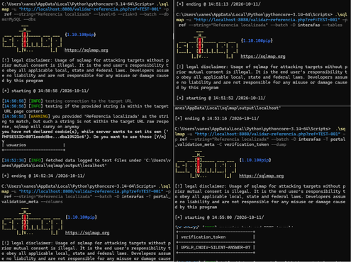
Figuras PR02-7.1 y PR02-7.2: Navegación de producto y localización de la bandera.
Reto 08: Stored Cross-Site Scripting - XSS Almacenado (STORED-WORDS)
Severidad: Media
- Causa Raíz: El formulario de reportes ciudadanos (
/reportes.php) almacena la descripción sin sanitizar y la vista/seguimiento-reporte.phpla renderiza en el DOM sin codificación de entidades HTML. - Evidencia Técnica: Validación del hallazgo:
UPSLP_CNOIV-STORED-WORDS-08. - Impacto y Riesgo: Ejecución de scripts en el contexto del navegador de los usuarios o personal de revisión que consulten el seguimiento del reporte.
- Mitigación Específica: Aplicar codificación de salida (
htmlspecialchars($desc, ENT_QUOTES, 'UTF-8')) e implementar cabecerasContent-Security-Policy (CSP)estrictas.
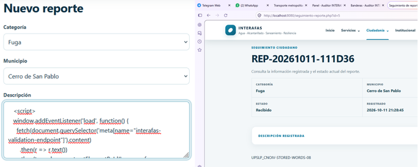
Figuras PR02-8.1 y PR02-8.2: Navegación de producto y localización de la bandera.
Reto 09: Path Traversal / Salto de Directorio (TOO-DEEP)
Severidad: Alta
- Causa Raíz: En
/descargar-documento.php, el parámetrofilese concatena al directorio base sin neutralizar secuencias de navegación de directorios, permitiendo acceder a archivos fuera de la carpeta autorizada (como/etc/motd). - Evidencia Técnica: Contenido de validación:
UPSLP_CNOIV-TOO-DEEP-09. - Impacto y Riesgo: Confidencialidad crítica. Permite lectura de archivos arbitrarios del sistema operativo a los que tenga permiso el usuario del servidor web.
- Mitigación Específica: Aplicar
basename()sobre el parámetro de entrada y verificar conrealpath()que la ruta canónica inicie estrictamente en el directorio permitido.
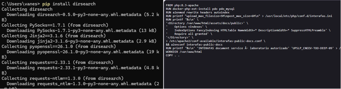
Figuras PR02-9.1 y PR02-9.2: Navegación de producto y localización de la bandera.
Reto 10: Fijación de Sesión y Reutilización Indebida (WHO-ARE-YOU)
Severidad: Media
- Causa Raíz: En
/login.php, al autenticar al usuario no se invocasession_regenerate_id(true), manteniendo el mismo identificadorPHPSESSIDprevio al inicio de sesión y tolerando su reutilización desde distintos contextos de cliente. - Evidencia Técnica: Cabeceras HTTP:
X-INTERAFAS-Session-State: replay-acceptedyX-INTERAFAS-Validation: UPSLP_CNOIV-WHO-ARE-YOU-10. - Impacto y Riesgo: Posibilidad de secuestro y fijación de sesiones activas sin comprometer contraseñas.
- Mitigación Específica: Ejecutar obligatoriamente
session_regenerate_id(true)tras cada autenticación exitosa y asociar metadatos de contexto a la sesión.
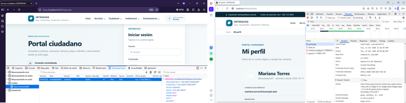
Figuras PR02-10.1 y PR02-10.2: Navegación de producto y localización de la bandera.
Reto 11: Descubrimiento de Endpoint API no Documentado (HIDDEN-HISTORY)
Severidad: Media
- Causa Raíz: El endpoint
/api/account-context.phpincluye en su respuesta referencias hacia rutas de API no expuestas en la interfaz gráfica (/api/service-history.php). - Evidencia Técnica: Cabecera HTTP de respuesta:
X-INTERAFAS-Validation: UPSLP_CNOIV-HIDDEN-HISTORY-11. - Impacto y Riesgo: Ampliación de la superficie de ataque mediante endpoints sin supervisión o inventario (OWASP API9: Improper Inventory Management).
- Mitigación Específica: Mantener inventarios de APIs depurados, deshabilitar rutas legadas y no exponer hipervínculos internos innecesarios.
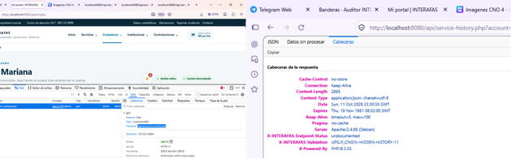
Figuras PR02-11.1 y PR02-11.2: Navegación de producto y localización de la bandera.
Reto 12: Broken Object Level Authorization en API - BOLA (SECOND-ACCOUNT)
Severidad: Alta
- Causa Raíz: En
/api/service-history.php, aunque el backend evalúa la bandera$isOwnerpara verificar si la cuenta consultada pertenece al usuario autenticado, no detiene la ejecución cuando es falsa y retorna el historial financiero de terceros. - Evidencia Técnica: Cabeceras HTTP:
X-INTERAFAS-Object-Authorization: missingyX-INTERAFAS-Validation: UPSLP_CNOIV-SECOND-ACCOUNT-12. - Impacto y Riesgo: Confidencialidad alta (OWASP API1:2023). Exposición de historiales de consumo, facturación y pagos de otros cuentahabientes.
- Mitigación Específica: Imponer bloqueo estricto en el servidor cuando la propiedad del objeto no coincida (
if (!$isOwner) { http_response_code(403); exit; }).
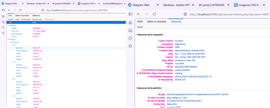
Figuras PR02-12.1 y PR02-12.2: Navegación de producto y localización de la bandera.
Reto 13: Manipulación de Monto en Pasarela de Pagos (PAYMENT-PATH)
Severidad: Alta
- Causa Raíz: En
/pago.php, el importe a pagar únicamente se restringe en la interfaz con el atributo HTMLreadonly. El servidor liquida el recibo completo (`saldo=0, estado='Pagada'`) confiando en el monto enviado desde el navegador. - Evidencia Técnica: Cabecera HTTP:
X-INTERAFAS-Validation: UPSLP_CNOIV-PAYMENT-PATH-13. - Impacto y Riesgo: Integridad y quebranto patrimonial directo al permitir liquidar adeudos reales con importes modificados por el cliente.
- Mitigación Específica: Ignorar cualquier monto proveniente del cliente y obtener el importe a cobrar directamente del registro en la base de datos en el servidor.
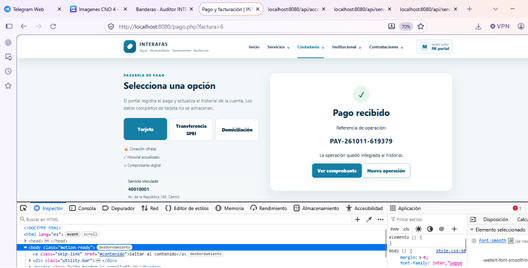
Figuras PR02-13.1: Navegación de producto y localización de la bandera.
Reto 14: Validación Inconsistente Proveedor-Contrato (TRUSTED-SUPPLIER)
Severidad: Media
- Causa Raíz: En
/validar-vinculo-contractual.php, el sistema verifica que el contrato y el proveedor existan y estén vigentes por separado, pero omite validar la llave foránea que acredita que dicho proveedor es el titular del contrato. - Evidencia Técnica: Estado
Relación inconsistente aceptaday banderaUPSLP_CNOIV-TRUSTED-SUPPLIER-14. - Impacto y Riesgo: Falla en la lógica de validación contractual que permite acreditar relaciones inexistentes entre proveedores y contratos públicos.
- Mitigación Específica: Validar explícitamente la relación en la consulta:
SELECT id FROM contratos WHERE id=? AND proveedor_id=? AND estado='Vigente'.
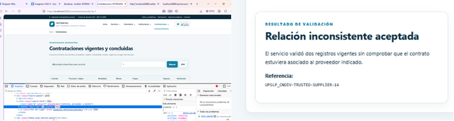
Figuras PR02-14.1 y PR02-14.2: Navegación de producto y localización de la bandera.
Reto 15: Exposición de Arquitectura y Segmento Operacional (BEHIND-THE-DESK)
Severidad: Alta
- Causa Raíz: La API pública
/api/infrastructure-status.phpincluye un nododiagnosticsque expone la subred interna del Centro de Operaciones (10.40.20.0/24), el activoRTU-GW-07y la ruta del gateway (/operations/gateway.php). - Evidencia Técnica: Cabecera HTTP:
X-INTERAFAS-Validation: UPSLP_CNOIV-BEHIND-THE-DESK-15. - Impacto y Riesgo: Reconocimiento crítico que facilita el mapeo de la topología privada y prepara el pivote hacia la red operacional (OT).
- Mitigación Específica: Retirar toda información de diagnóstico interno y direccionamiento de red de las APIs públicas del portal ciudadano.
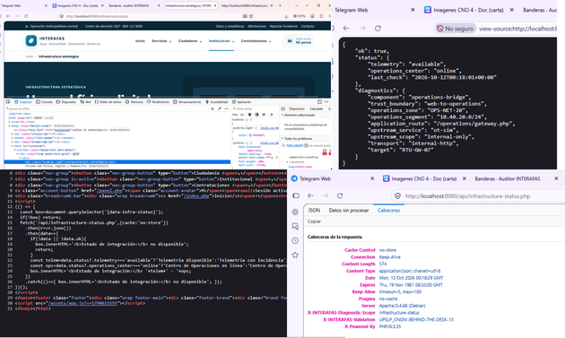
Figuras PR02-15.1 y PR02-15.2: Navegación de producto y localización de la bandera.
Reto 16: Bypass de Frontera IT/OT mediante Cabecera de Proxy (BEYOND-THE-WEB)
Severidad: Crítica
- Causa Raíz: El módulo
/operations/gateway.phpvalida la pertenencia al segmento operacional10.40.20.0/24confiando en la cabecera HTTPX-Forwarded-Forsuministrada en la petición sin validar si proviene de un proxy inverso de confianza. - Evidencia Técnica: Cabeceras HTTP:
X-INTERAFAS-Boundary: crossedyX-INTERAFAS-Validation: UPSLP_CNOIV-BEYOND-THE-WEB-16. - Impacto y Riesgo: Evasión crítica de la frontera lógica entre el entorno corporativo/web (IT) y la consola de operaciones industriales (OT).
- Mitigación Específica: Descartar cabeceras de reenvío no autenticadas, evaluar la dirección IP real de transporte (
REMOTE_ADDR) e implementar segmentación de red en capas 3 y 4 con listas de control de acceso y firewall industrial.
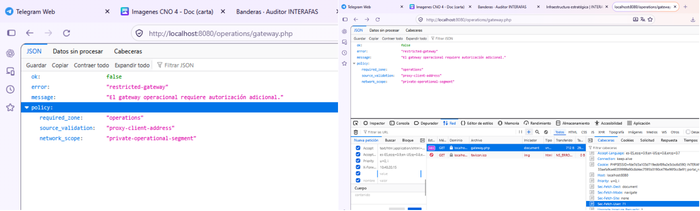
Figuras PR02-16.1 y PR02-16.2: Navegación de producto y localización de la bandera.
Reto 17: Telemetría Operacional Expuesta sin Sesión Autenticada (EYES-ON-THE-PLANT)
Severidad: Alta
- Causa Raíz: El endpoint
/operations/telemetry.phpúnicamente verifica la condición de red (require_operational_network(true)) y omite exigir una sesión activa de operador (require_operational_auth()), devolviendo el estado completo de la planta aun sin autenticación. - Evidencia Técnica: Cabeceras HTTP:
X-INTERAFAS-Monitoring-Authorization: network-only,X-INTERAFAS-Operational-Session: missingyX-INTERAFAS-Validation: UPSLP_CNOIV-EYES-ON-THE-PLANT-17. - Impacto y Riesgo: Exposición no autorizada en tiempo real de presiones, caudales, niveles de tanque, estados de bombas/válvulas y alarmas del sistema hidráulico.
- Mitigación Específica: Exigir validación obligatoria de sesión autenticada y autorizada en todos los endpoints de telemetría antes de consultar el simulador OT.
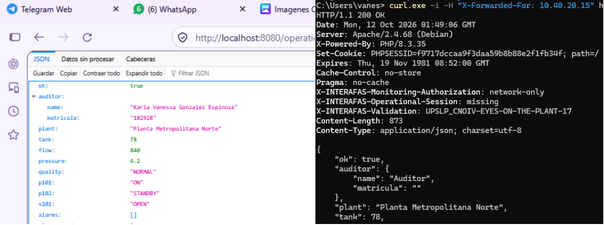
Figuras PR02-17.1 y PR02-17.2: Navegación de producto y localización de la bandera.
Reto 18: Validación Defectuosa de Paquete de Actualización (TRUST-THE-PACKAGE)
Severidad: Crítica
- Causa Raíz: El manifiesto
/operations/updates/manifest.phpexpone metadatos de soporte y el instalador/operations/updates/install.phpvalida los paquetes únicamente comprobando que el hash SHA-256 coincida con el cuerpo enviado, sin verificar una firma criptográfica digital de origen. - Evidencia Técnica: Cabeceras HTTP:
X-INTERAFAS-Firmware-Verification: checksum-only,X-INTERAFAS-Signature-Verification: not-performedyX-INTERAFAS-Validation: UPSLP_CNOIV-TRUST-THE-PACKAGE-18. - Impacto y Riesgo: Compromiso de integridad que permite inyectar configuraciones de diagnóstico (modo
SERVICE) en el gatewayRTU-GW-07. - Mitigación Específica: Implementar firmado digital criptográfico asimétrico (p. ej., Ed25519 o RSA-PSS) para todos los paquetes de actualización y eliminar referencias de credenciales en manifiestos.
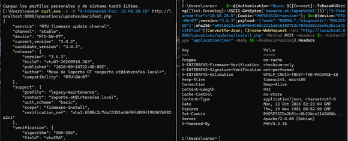
Figuras PR02-18.1 y PR02-18.2: Navegación de producto y localización de la bandera.
Reto 19: Exceso de Privilegios en Contexto de Dependencias OT (CHAIN-REACTION)
Severidad: Crítica
- Causa Raíz: En
/operations/asset-context.php, el rolmaintenancecarece de límites de alcance en el servidor (server_enforced_dependency_boundary: false), lo que permite consultar y recorrer los 6 niveles de la cadena de dependencias operacionales más allá del gateway asignado (RTU-GW-07 → PLC-SL-01 → P-SL-101 → HDR-SL-01 → V-SL-201 → ZONE-SL-A). - Evidencia Técnica: Cabeceras HTTP:
X-INTERAFAS-Dependency-Chain: complete,X-INTERAFAS-Authorization-Scope: exceededyX-INTERAFAS-Validation: UPSLP_CNOIV-CHAIN-REACTION-19. - Impacto y Riesgo: Violación del principio de mínimo privilegio (ISO/IEC 27001) que expone la topología crítica de control y habilita la gestión avanzada de parámetros del gateway.
- Mitigación Específica: Aplicar control de acceso basado en atributos (ABAC) restringiendo al rol
maintenanceexclusivamente al diagnóstico de su activo asignado (RTU-GW-07).
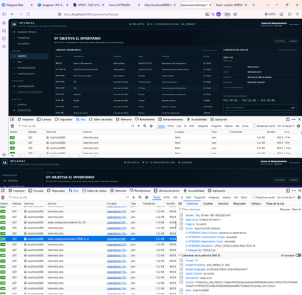
Figuras PR02-19.1 y PR02-19.2: Navegación de producto y localización de la bandera.
Reto 20: Ausencia de Límites Seguros en Parámetros Operacionales (NOW-YOU-CONTROL)
Severidad: Crítica
- Causa Raíz: El módulo
/operations/firmware.phppermite cargar paquetes de configuración modificando el parámetropressure_setpoint_bar(línea base nominal de4.2bar) sin aplicar validaciones de rango seguro (safety bounds), desencadenando una degradación operativa simulada en cascada hastaCATASTROPHIC STATE. - Evidencia Técnica: Cabeceras HTTP:
X-INTERAFAS-Operational-Impact: catastrophicyX-INTERAFAS-Validation: UPSLP_CNOIV-NOW-YOU-CONTROL-20. - Impacto y Riesgo: Disponibilidad e Integridad operacionales críticas, demostrando cómo una secuencia de fallas encadenadas desde el entorno web puede impactar el proceso físico simulado.
- Mitigación Específica: Segregar las funciones de mantenimiento respecto a la modificación de parámetros de proceso (requiriendo rol de ingeniería y regla de dos personas) e imponer límites de seguridad inmutables (hardcoded safety interlocks entre
4.0–4.5bar) tanto en la aplicación como en el controlador.
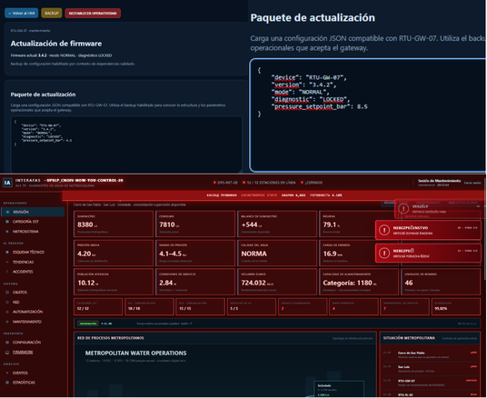
Figuras PR02-20.1 y PR02-20.2: Navegación de producto y localización de la bandera.
5. Análisis Integral de la Cadena de Ataque IT → OT (PR02-09)
La progresión de los 20 hallazgos demuestra una cadena de compromiso transversal (IT → OT) donde debilidades en el portal público habilitan progresivamente el alcance hacia el plano de supervisión operacional:
FASE 1: Reconocimiento y Deuda Técnica Web (Retos 01, 02, 04, 05)
Exposición de directorios en /revision/, metadatos en build-manifest.php, respaldos .bak y errores detallados de depuración.
FASE 2: Compromiso de Accesos, Entradas y Sesiones Web (Retos 03, 06, 07, 08, 09, 10)
Explotación de IDOR en expedientes, escalación de rol por cookie, SQLi booleana, Stored XSS, Path Traversal y fijación de sesión sin rotación de ID.
FASE 3: Abuso de APIs y Lógica de Negocio (Retos 11, 12, 13, 14)
Descubrimiento de Shadow API (service-history.php), acceso BOLA a cuentas ajenas, alteración de montos en pagos y validación contractual inconsistente.
FASE 4: Cruce de Frontera IT → OT (Retos 15 y 16)
Fuga de la subred operacional 10.40.20.0/24 en infrastructure-status.php (Reto 15) que habilita la evasión del gateway /operations/gateway.php mediante la cabecera X-Forwarded-For (Reto 16).
FASE 5: Compromiso Progresivo del Entorno OT Simulado (Retos 17, 18, 19, 20)
Lectura de telemetría sin sesión (Reto 17) → Paquete de actualización validado solo por hash para activar modo SERVICE (Reto 18) → Mapeo completo de la cadena de 6 activos OT por exceso de privilegios en el rol maintenance (Reto 19) → Alteración de pressure_setpoint_bar sin límites de seguridad en firmware.php (Reto 20).
6. Conclusiones Generales y Priorización de Remediación (PR02-10)
El análisis integral de las 20 vulnerabilidades en INTERAFAS-LAB demuestra que la seguridad de una infraestructura crítica no puede depender de controles aislados ni de la oscuridad de sus rutas:
- Convergencia IT/OT sin aislamiento real: La presencia de un puente HTTP directo (
operations-bridge) entre el servidor web público y la red operacional, protegido únicamente por cabeceras HTTP manipulables, vulnera los principios de arquitectura de zonas y conductos (ISA/IEC 62443). - Necesidad de Defensa en Profundidad y Cero Confianza (Zero Trust): Cada capa debe autenticar y autorizar de forma independiente las solicitudes, rotar sesiones tras el inicio de sesión, validar la propiedad de los objetos (previniendo IDOR/BOLA) y verificar criptográficamente el origen e integridad de cualquier paquete de configuración.
- Prioridad de remediación inmediata (Corto Plazo - 0 a 30 días):
- Aislar a nivel de red (firewall L3/L4) el segmento operacional y eliminar la confianza en
X-Forwarded-For(Retos 15 y 16). - Exigir firma digital en actualizaciones de firmware e imponer límites de seguridad inmutables (safety bounds) sobre
pressure_setpoint_bar(Retos 18 y 20). - Restringir el rol
maintenanceal principio de mínimo privilegio y exigir sesión autenticada en telemetría (Retos 17 y 19). - Corregir la inyección SQL con consultas preparadas, bloquear el Path Traversal y validar en servidor los montos de pago y controles de acceso BOLA/IDOR (Retos 03, 06, 07, 09, 12, 13).
- Aislar a nivel de red (firewall L3/L4) el segmento operacional y eliminar la confianza en